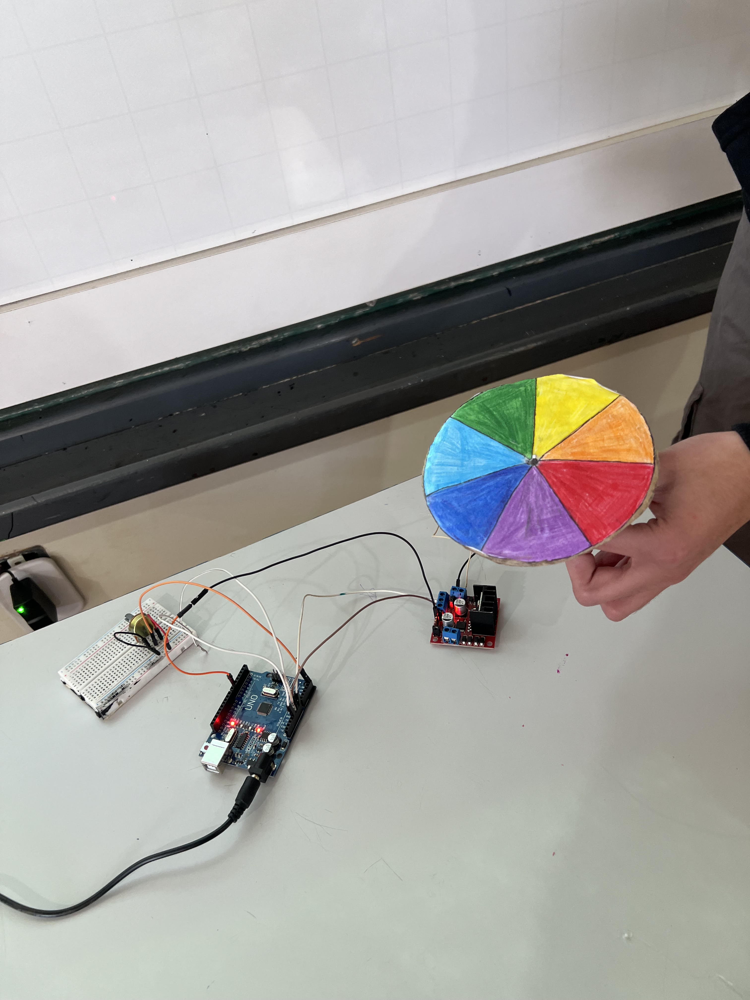

width="300"> O Disco de Newton e um dispositivo inventado pelo fisico Isaac Newton para demonstrar
de forma pratica a decomposicao e recomposicao da luz.
Ele prova que a luz branca do Sol e, na verdade, a mistura de todas as cores do arco-iris.
Como Funciona:
Cores basicas: O disco e dividido em setores circulares pintados com as cores do
espectro visivel (vermelho, laranja, amarelo, verde, azul, anil e violeta). Rotacao rapida:
Quando o disco gira em alta velocidade, as cores se misturam diante dos nossos olhos.
Resultado visual: O disco passa a parecer branco (ou cinza-esbranquicado,
dependendo da fidelidade das cores e da iluminacao do ambiente).
Fenomeno biologico: Isso acontece devido a persistencia retiniana,
uma ilusao de otica onde o olho humano retem a imagem de cada cor por uma fracao de segundo, sobrepondo-as no cerebro.
Materiais necessarios: (para a base onde o disco sera desenhado).Compasso ou um CD antigo (usado como molde para fazer
o circulo perfeito).Lapis de cor, giz de cera ou canetinhas nas sete cores do arco-iris
(vermelho, laranja, amarelo, verde, azul, anil/escuro e violeta/roxo).Regua e lapis comum (para dividir o circulo em fatias iguais).
Tesoura (com ponta, para recortar).Suporte para girar: Um lapis apontado, um palito de churrasco,
um barbante ou ate um CD velho com gude/tampa para virar um piao.Cola (branca ou quente) para fixar as partes.